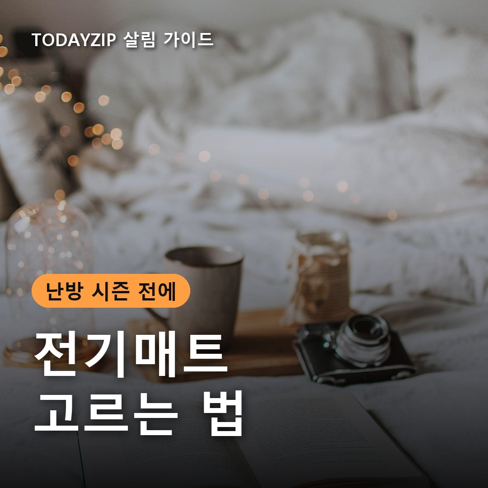
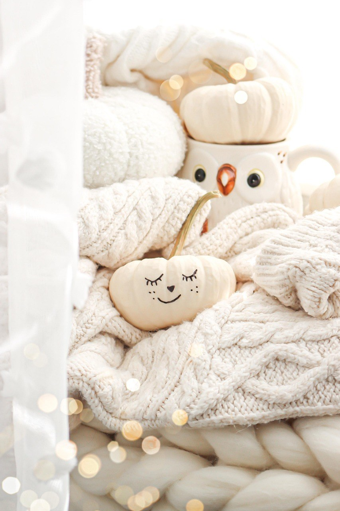
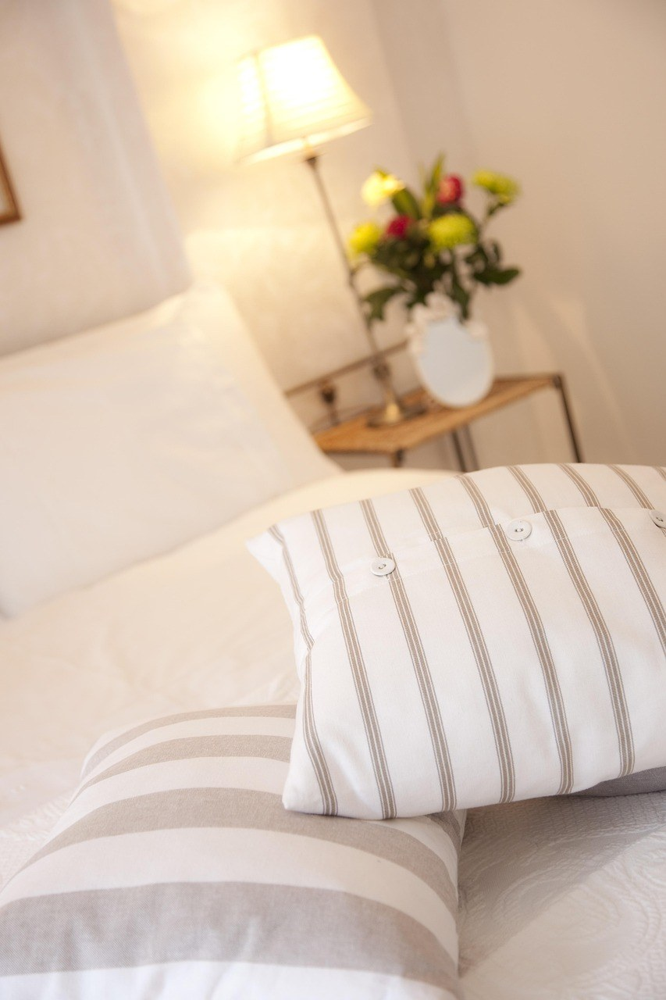
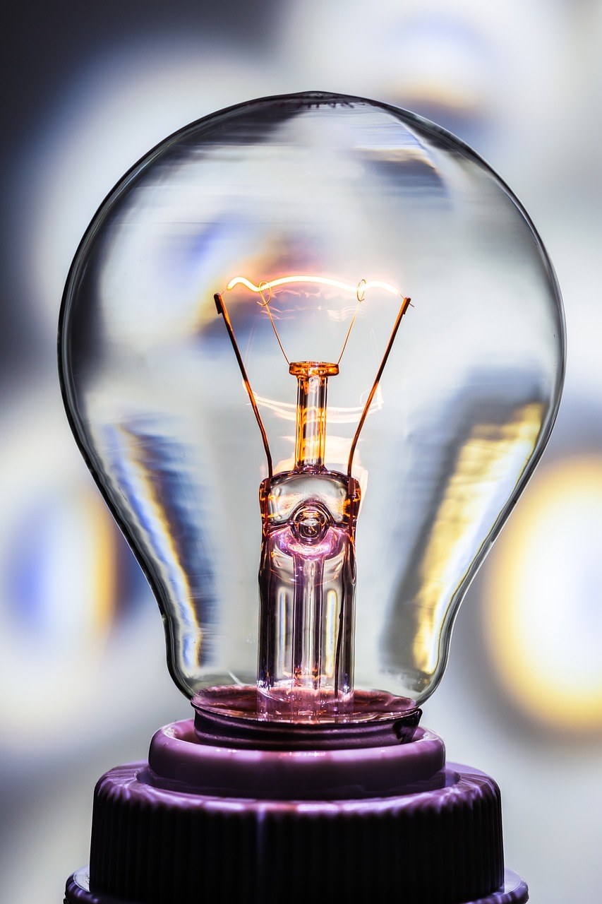
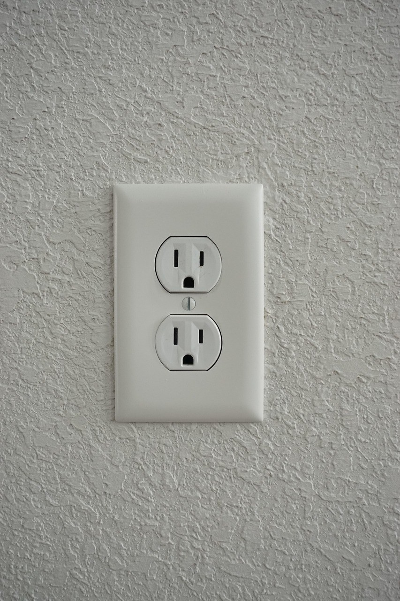

이 포스팅은 쿠팡 파트너스 활동의 일환으로, 이에 따른 일정액의 수수료를 제공받습니다.
[사진 1: 썸네일]
아침저녁으로 바닥이 차가워지기 시작했어요. 보일러를 본격적으로 돌리기 전, 이맘때 가장 많이 찾는 살림템이 바로 전기매트예요.
그런데 전기요, 탄소매트(카본매트), 온수매트까지 종류도 많고 가격 차이도 커서 고르기가 쉽지 않죠. 오늘은 전기매트 고르는 법을 방식별 차이, 체크리스트, 안전하게 쓰는 법까지 한 번에 정리해 드릴게요.
[사진 2]
전기매트는 열을 내는 방식에 따라 가격, 관리의 번거로움, 소음, 따뜻해지는 속도가 크게 달라져요.
같은 '전기매트'라도 열선으로 데우는 전기요, 탄소섬유 발열체를 쓰는 탄소매트, 물을 데워 돌리는 온수매트는 전혀 다른 제품이라고 생각하시면 고르기가 훨씬 쉬워요.
세 가지 방식을 표로 정리했어요. 가격대는 크기와 기능에 따라 달라지니 대략적인 범위로 봐 주세요.
| 구분 | 전기요(열선) | 탄소매트(카본) | 온수매트 |
|---|---|---|---|
| 원리 | 매트 속 열선이 직접 발열 | 탄소섬유 발열체가 발열 | 본체에서 데운 물이 호스로 순환 |
| 가격대 | 가장 저렴한 편 | 중간 | 가장 비싼 편 |
| 장점 | 가볍고 간편, 빨리 따뜻해짐 | 열이 고르게 퍼지는 편, 얇고 가벼움 | 매트 안에 전선이 없음, 온도가 은은함 |
| 단점 | 제품에 따라 온도 편차 | 전기요보다 가격이 높음 | 물 보충·관리 필요, 순환 소리 |
| 잘 맞는 집 | 가성비, 1인 가구, 보조 난방 | 매일 오래 쓰는 침대 | 아이·어르신, 매트 속 전선이 꺼려질 때 |
[사진 3]
방식을 정했다면 아래 체크리스트로 후보를 좁혀 보세요.
[사진 4]
전기매트는 바닥 전체를 데우는 보일러와 달리 몸이 닿는 곳만 데우기 때문에, 1인용 기준으로 하루 몇 시간 쓰면 한 달 전기요금이 수천 원대에 그치는 경우가 많아요.
다만 소비전력(W)과 사용 시간, 설정 온도에 따라 차이가 크니 상세페이지의 소비전력을 확인하고, 높은 온도로 오래 켜 두기보다 미리 데운 뒤 낮은 온도로 유지하는 게 좋아요.
[사진 5]
전기매트 사고는 대부분 잘못된 사용에서 생겨요. 아래 습관만 지켜도 훨씬 안전해요.
Q. 전기매트 전자파, 걱정해야 하나요?
A. 국내 판매 전기매트는 전자파 인체보호 기준에 맞춘 전자파 적합 인증을 받아야 해요. 그래도 신경 쓰인다면 인증 표시를 확인하고, 매트 속 전선이 없는 온수매트를 고르는 방법도 있어요.
Q. 밤새 켜 두고 자도 괜찮나요?
A. 자동 꺼짐 타이머를 쓰는 걸 추천해요. 잠들기 전 미리 데워 두고, 잘 때는 낮은 온도로 설정하거나 몇 시간 뒤 꺼지게 해 두세요.
Q. 탄소매트와 카본매트는 다른 제품인가요?
A. 같은 제품이에요. 카본(Carbon)이 탄소의 영어 표현이라 두 이름이 함께 쓰여요.
정리하면, 가성비와 간편함이 중요하다면 전기요, 매일 오래 쓸 침대용이라면 탄소매트, 매트 속 전선이 신경 쓰이거나 아이가 있는 집이라면 온수매트가 잘 맞아요. 어떤 방식이든 KC 인증과 타이머는 꼭 확인하세요.
여러분은 겨울에 어떤 매트를 쓰고 계세요? 댓글로 사용 경험을 나눠 주시면 다른 분들께도 큰 도움이 돼요.
인스타그램 @todayzip.info 에서 살림 꿀팁을 30초 영상으로도 볼 수 있어요.
이 포스팅은 쿠팡 파트너스 활동의 일환으로, 이에 따른 일정액의 수수료를 제공받습니다.